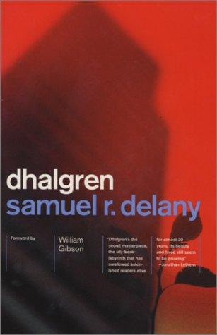
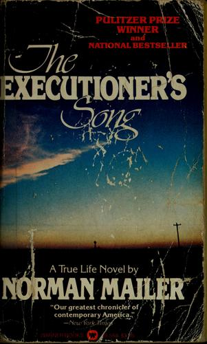
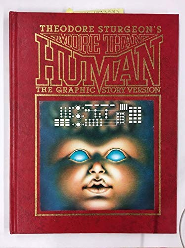
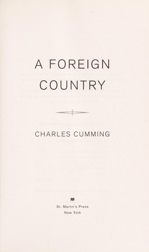
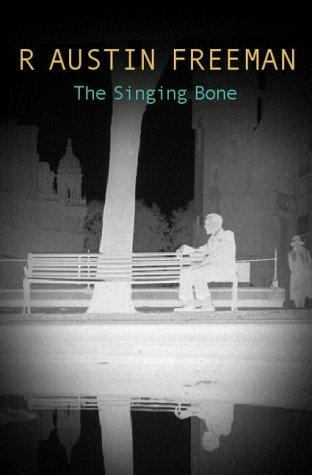

weekly digest
Week 2026-44
Recommendations for the week of 26 October 2026.
This week rotates a fresh set of highbrow edges: the translated-fiction thread reaches Argentina and the Latin American "Boom" for the first time with Cortázar's choose-your-own-order anti-novel; the literary / New Wave SF edge returns with Delany's vast, recursive Dhalgren, well beyond the Golden Age; and the forensic-nonfiction edge lands on Mailer's Pulitzer-winning documentary novel of a murderer who demanded his own execution — wired to the criminology interest and to how a justice system reasons. The comfort picks hold the three best-loved veins — big-idea SF, cold-weather espionage, Golden-Age crime — while reaching for fresh authors and structures: a triptych about a composite mind, a modern MI6 manhunt, and the story collection that invented the inverted mystery.
Highbrow



Lowbrow


